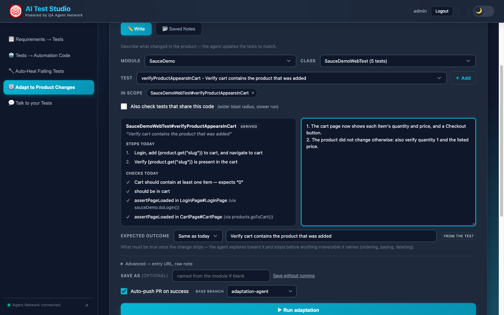
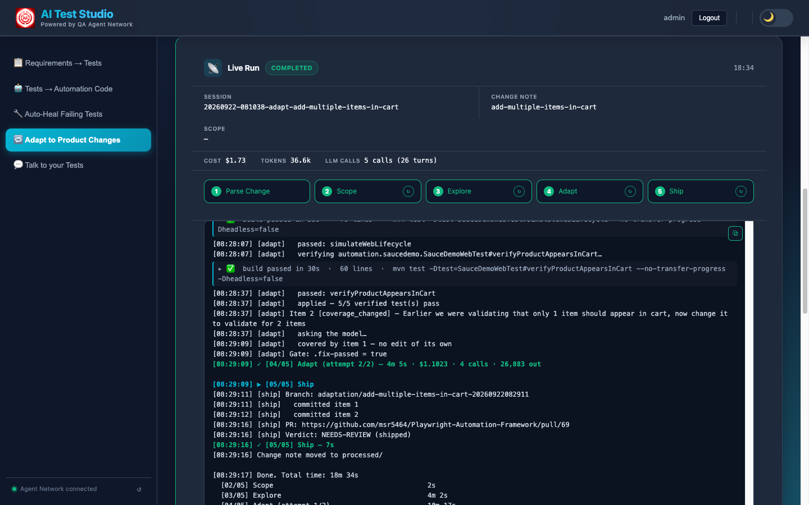

Product teams usually know before they ship: "after login there's now a Choose workspace screen", "the 3-step checkout is now 2 steps". Today that knowledge waits until the nightly run goes red. The adaptation agent takes a plain-English change note, explores the live product, and updates the affected tests, while holding a frozen record of what each test proved, so no edit is allowed to quietly prove less.
The Problem
The healing agent handles a renamed selector. Product changes are usually bigger: a step is inserted, a wizard's pages merge, a <select> becomes a combobox, a route moves, a form gains a required field. None of that is a locator fix; the test's steps have to change.
And once an edit may add or remove steps, "the test passes" stops being evidence. A test that asserts nothing passes fastest of all. Widening a healing agent's diff budget doesn't buy the ability to repair a changed flow; it buys the ability to delete an assertion and ship a permanently green, broken test. So adaptation is a separate agent with a different proof, different evidence and a different shipping policy.
The Change Note
The input is a short note a human writes, in AI Test Studio's Adapt to Product Changes page, or as a file in the agent's queue:
Module: checkout Type: web URL: https://app.staging.example.com Affects: automation.checkout.* What changed: 1. After login a "Choose workspace" screen now appears before the dashboard. 2. The 3-step checkout wizard is now 2 steps. 3. "Place Order" was renamed to "Confirm & Pay". Expected outcome unchanged: an order is placed and a confirmation number is shown.
Each numbered item is classified into a kind (locator, interaction, route, step_insert, step_merge, field_added, api_contract, content_changed, outcome_changed and more) and the kind decides how much authority the repair gets. Replacing a selector may touch 6 lines; inserting a step, 40 per file; a whole new page object, 300. An item the classifier can't place gets no authority at all: it escalates to a human.
Why a note beats a failure
Telling "a step was inserted" apart from "the previous step silently did nothing" is the hardest inference in the whole problem. Both look identical from a failing test. A human writing the change note has already answered it, which is the entire payoff of triggering on a note instead of on red.

The 5-Step Pipeline
Headers (module, type, affected tests, URLs) are parsed in Python. Claude classifies each numbered item into its kind.
A static read of the automation repo works out the blast radius (the named tests, tests that share the changed surface, and what verifying them will cost) and freezes an intent contract for each test: every assertion reachable through its whole helper call graph, not just the ones visible in the test file.
The API half makes real HTTP calls against the live endpoints. The web half has Claude drive the live product through Playwright MCP, from a saved login session. Both combine into one ordered flow map of what was actually observed. Every selector's uniqueness is re-counted in Python; the model's own count is kept, and used for nothing.
Edits the Java for each change item as a transaction: snapshot → apply → guards → compile → verify, and restore every file on any failure. One item routinely spans a new page object, a helper and a call site, so it is all or nothing. Failed verifications retry within a budget. Propose-only mode still compiles the edit and checks it against the contracts, then rolls it back, so a proposal that doesn't build, or drops an assertion, is rejected before anyone reads it.
Commits one change item at a time and opens a PR in which every edit is tied to the observed step that justified it. The verdict is always NEEDS-REVIEW: an adaptation changes what a test does, and a human signs that off.

What Makes It Safe
1. Freeze the contract before editing
Step 02 measures what every in-scope test proves and stores it. Every later check compares against that stored copy. Re-deriving the contract after the edit would describe the edited code, and a conservation check against that approves whatever the edit just did.
2. Guess, then measure, then edit
Page objects are first nominated by name, cheap, usually right, and still a guess: two modules can both own a LoginPage. Once exploration has reported what is on each page, the agent measures which page object each observed page actually is, using the same page-identity rule the healing agent applies to a failure, and only then edits.
3. Transcribe, don't invent
Every interaction an edit adds must match a step exploration actually observed. A flow-map step whose selector couldn't be verified unique justifies nothing; unverified is not yes.
Then the guards run over each change item's combined diff, before anything compiles:
- CHECKS CONSERVED An assertion removed, changed, weakened or made conditional without the note declaring it, anywhere in the call graph. Fails closed when it can't measure.
- STEPS JUSTIFIED An added interaction that matches nothing exploration observed.
- NOT THE LOGIN PAGE An anchor that also matches the logged-out or error page. A selector that matches the login page is not proof of a successful login.
-
NO SWALLOWING
Empty catches,
Thread.sleep,@Ignore, disabled or skipped tests. -
FRAMEWORK RULES
Raw driver calls instead of the framework's wrappers, an interaction without its
logStep, or a hard-coded URL. - BUDGETS Each item's per-kind line budget, the run's total diff budget, and a cap on files touched.
When It Refuses
The agent refuses rather than guesses. It escalates to a human when:
- the classifier couldn't place a change item;
- a failure appears that no line of the note accounts for (the change-vs-bug gate): a human asserted change A, which says nothing about an unrelated defect B;
- the login the test itself uses doesn't produce a session, a finding about the module, not a reason to sign in some other way;
- the flow ends in something irreversible (ordering, paying, deleting) outside a sandbox environment;
- an existing page object would need regenerating wholesale;
- a check would have to change, or be weakened, without the note saying so;
- the blast radius is bigger than one agent run should take on;
- a changed expected text is something the browser doesn't actually show.
How It Fits the Network
Change notes arrive three ways: an engineer writes one in AI Test Studio (or loads a saved note), drops one in the agent's queue from the CLI, or the healing agent drafts one. When every locator on a failing page stopped matching but its URL still matches the last good run, the page was rebuilt in place; healing writes a draft change note instead of patching selectors, and a human reviews it before it runs.
Explore-only stops after step 03 and returns just the flow map, useful for seeing what the product does today before writing the note. Like the other agents, every run leaves a full audit trail and reports its time and cost to the Studio's Analytics page.
The division of labour
Healing is reactive: a test failed, and the question is why. It holds one hypothesis (the selector is stale) and runs unattended. Adaptation is proactive: somebody knows what changed, and the question is what the tests should now do about it. It may change steps, so it proves itself against the frozen intent contract and never ships without review. Merging them would leave the unattended nightly path one setting away from whole-file rewrites.
Next: Talk to Tests
Four agents write, triage, heal and adapt the automation. The last feature is the knowledge layer: ask the whole QA knowledge base a question in plain English and get an answer grounded in your own test cases.